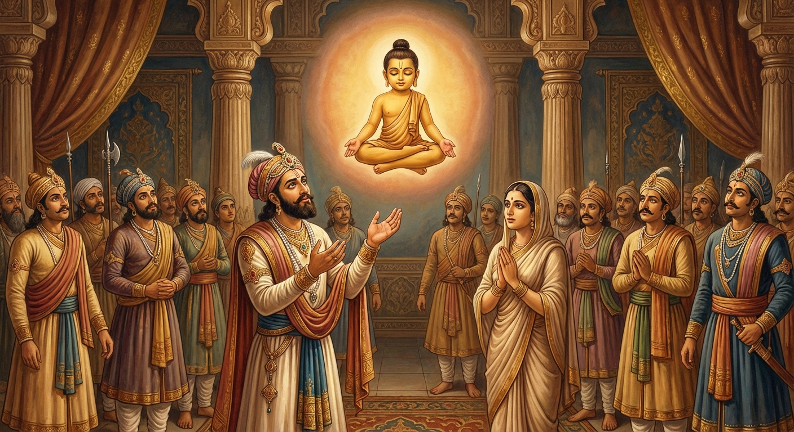

7. කට්ඨහාරි ජාතකය (7)
“පුත්තො ත්යාහං මහාරාජ” (මහරජ, මම ඔබගේ පුත්රයා වෙමි) යන මෙම ජාතක කතාව බුදුරදුන් ජේතවනාරාමයේ වැඩ වසන සමයෙහි වාසභඛත්තියා නම් කුමරිය අරබයා දේශනා කරන ලදී. වාසභඛත්තියාවගේ කතා පුවත දොළොස් වැනි නිපාතයේ භද්දසාල ජාතකයේ විස්තර වන්නේය. ඇය වනාහි මහානාම ශාක්ය රජුගේ දියණියකි; නාගමුණ්ඩා නම් දාසියගේ කුසින් උපන්නියකි. පසුව කොසොල් රජුගේ අගමෙහෙසිය වූවාය. ඇය රජුට දාව පුතකු වැදුවාය. රජතුමා පසුව ඇයගේ දාසිභාවය දැන ඇයව අගමෙහෙසි තනතුරින් පහත හෙළීය; පුත් වූ විඩූඩභ කුමරුගේ තනතුර ද පහත හෙළීය. ඒ දෙදෙනාම රජමැදුර තුළම වෙසෙති. බුදුරදුන් මේ කරුණ දැන, පෙරවරු කාලයෙහි පන්සියයක් භික්ෂූන් පිරිවරා රජ මැදුරට වැඩමවා, පනවන ලද අසුනෙහි වැඩහිඳ, “මහරජ, වාසභඛත්තියා කොහි ද?”යි ඇසූහ. රජතුමා ඒ පුවත සැල කළේය. “මහරජ, වාසභඛත්තියා කවරකුගේ දියණියක් ද?” “ස්වාමීනි, මහානාම රජුගේය.” “කවරකු උදෙසා මෙහි පැමිණියා ද?” “ස්වාමීනි, මා උදෙසාය.” “එසේ නම් මහරජ, ඇය රාජ දියණියකි. රජකු උදෙසාම පැමිණියාය. ඔබටම දාව පුතකු ද ලැබුවාය. එම පුත්රයා පිය සතු රාජ්යයට හිමියෙකු නොවන්නේ කුමක් නිසා ද? පෙර රජවරු එකෙණෙහි බිරිය බවට පත්, දර ගෙන යන්නියගේ කුසෙහි උපන් පුතුට ද රාජ්යය දුන්හ.” කොසොල් රජතුමා මෙම පුවත හෙළිදරව් කිරීම පිණිස බුදුරදුන්ගෙන් අයැද සිටියේය. බුදුරදුන් භවාන්තරයෙන් වැසුණු ඒ කරුණ ප්රකට කළ සේක.
අතීතයේ බරණැස් නුවර බ්රහ්මදත්ත රජතුමා මහත් පිරිවර සහිතව උයනට ගොස්, එහි මල් සහ පලතුරු කෙරෙහි ආශාවෙන් උයන් වන ලැහැබෙහි ඇවිදින විට, එහි ගී ගයමින් දර නෙළන කාන්තාවක් දැක, ඇය කෙරෙහි සිත බැඳී ඇය සමඟ එක්වස වාසය කළේය. එකෙණෙහිම බෝසතාණෝ ඇගේ කුස පිළිසිඳ ගත්හ. ඒ සමඟම ඇගේ කුස වජ්රයකින් පිරුණාක් මෙන් බර විය. ඇය දරු ගැබක් පිහිටි බව දැන, “දේවයන් වහන්ස, මාගේ කුස දරු ගැබක් පිහිටියේය”යි කීවාය. රජතුමා ඇඟිලි මුදුවක් දී, “ඉදින් දුවක් ලැබුණහොත් මෙය විකුණා පෝෂණය කරව. පුත්රයකු ලැබුණහොත් මේ මුදුව සමඟ මා වෙත ගෙන එව”යි කියා පිටව ගියේය.
ඇය ද ගැබ් මුහුකුරා ගිය කල්හි බෝසතුන් බිහි කළාය. ඔහු දුව පැන ඇවිදින කාලයේ කෙළි මඬලෙහි සෙල්ලම් කරන විට අන් අය “පියා නැත්තා විසින් පහරන ලද්දෙමු”යි කියන්නෝ වෙති. එය ඇසූ බෝසත්හු මව වෙත ගොස් “මෑණියනි, මගේ පියා කවරෙක් ද?”යි ඇසූහ. “දරුව, ඔබ බරණැස් රජුගේ පුත්රයාය.” “මෑණියනි, ඒ සඳහා කිසියම් සාක්ෂියක් ඇත්තේ ද?” “දරුව, රජතුමා මේ මුද්ද දී ‘ඉදින් දුවක වූයේ නම් මෙය වියදම් කොට පෝෂණය කරන්නැ’යි ද ‘පුතෙක් වී නම් මේ මුදුව සමඟ තමා වෙත ගෙන එන්නැ’යි ද කියා ගියේය.” “මෑණියනි, එසේ නම් මා පියා ළඟට නොගෙන යන්නේ ඇයි?” පුතුගේ අදහස දැනගත් ඇය පුතු සමඟ රජමාළිගයේ දොරටුව වෙත ගොස් තමා පැමිණි බව දැන්වුවාය. රජු විසින් කැඳවන ලදුව ඇතුළට ගොස් රජු වැඳ, “දේවයන් වහන්ස, මේ ඔබතුමාගේ පුත්රයාය”යි කීවාය. රජතුමා ඒ බව දන්නා නමුත් පිරිස් මැද ලැජ්ජාවෙන් “මගේ පුත්රයකු නොවේය”යි කීය. “දේවයන් වහන්ස, මේ ඔබතුමන්ගේ ඇඟිලි මුදුවයි. මෙය හඳුනන්නේදැ?”යි ඇසුවාය. “මේ මුදුව ද මගේ නොවේ”යි රජු කීය. “දේවයන් වහන්ස, දැන් මට සත්ය ක්රියාව හැර වෙනත් සාක්ෂියක් නැත. ඉදින් මේ දරුවා ඔබතුමා නිසා උපන්නේ නම් අහසෙහි සිටීවා! එසේ නොවේ නම් බිම වැටී මැරේවා!”යි කියා බෝසතුන් පාදයෙන් අල්ලා අහසට විසි කළාය. බෝසතාණෝ අහසෙහි පළක් බැඳ වාඩි වී මිහිරි හඬින් තම පියාට දම් දෙසමින් මෙම ගාථාව වදාළහ:
“මහරජතුමනි, මම ඔබතුමාගේ පුත්රයා වෙමි. ජන නායකතුමනි, ඔබතුමා මා පෝෂණය කරනු මැනවි. දේවයන් වහන්සේ (රජතුමා) අන්යයන්ද පෝෂණය කරයි. එසේ තිබියදී සිය පුත්රයා පෝෂණය නොකරන්නේ මන්ද?”
එහි “පුත්තො ත්යාහ” යනු, ‘මම ඔබගේ පුත්රයා වෙමි’ යන්නයි. පුත්රයා වනාහි සිව් ආකාර වේ:
- අත්රජ (තමා නිසා උපන් දරුවා)
- ඛෙත්තජ (යහන, අසුන හෝ ළය මත උපන් දරුවා)
- අන්තෙවාසික (ඇසුරෙහි සිට ශිල්ප හදාරන සිසුවා)
- දින්නක (හදා වඩා ගැනීම සඳහා දෙන ලද දරුවා)
මෙහිදී ‘පුත්රයා’ යන්නෙන් අදහස් කළේ ‘අත්රජ’ පුත්රයායි. සතර සංග්රහ වස්තුවෙන් ජනයා සතුටු කරන බැවින් ‘රාජ’ නම් වේ; මහත් වූ රාජයා බැවින් “මහාරාජ” යැයි ආමන්ත්රණය කළේය. “ත්වං මං පොස ජනාධිප” යනු, ජනපතිතුමනි, ජන ප්රධානිය, ඔබතුමා මා පෝෂණය කරනු මැනවි; නඩත්තු කරනු මැනවි; වැඩීමට සලස්වනු මැනවි යන්නයි. “අඤ්ඤෙපි දෙවො පොසෙති” යනු, රජතුමා වෙනත් ඇත්ගොව් ආදී මිනිසුන් ද, ඇත් අස් ආදී තිරිසනුන් ද, වෙනත් බොහෝ ජනයා ද පෝෂණය කරයි යන්නයි. “කිඤ්ච දෙවො සකං පජං” යන්නෙහි “කිඤ්ච” යනු නින්දා අර්ථයෙහි ද අනුග්රහ අර්ථයෙහි ද යෙදෙන නිපාත පදයකි. “තමාගේ පුත්රයකු වූ මා රජතුමා පෝෂණය නොකරයි” යැයි කියන විට එය නින්දා කිරීමක් (ගරහා) වේ. “අන්ය වූ බොහෝ ජනයා පෝෂණය කරයි” යැයි කියන විට එය අනුග්රහ කිරීමක් වේ. බෝසත්හු මෙසේ දෝෂාරෝපණය කරමින් ද, අගය කරමින් ද “කිඤ්ච දෙවො සකං පජං” (රජතුමා සිය දරුවා ගැන නොබලන්නේ මන්ද?) යනුවෙන් පැවසූහ.

බෝසතාණන් අහසෙහි සිට මෙසේ දහම් දෙසනු අසා රජතුමා, “දරුව, මෙහි එනු මැනව. මම ම ඔබව පෝෂණය කරමි”යි කියමින් අත දිගු කළේය. (එකෙණෙහි රැස්ව සිටි පිරිස ද) දහස් ගණන් අත් දිගු කළහ. බෝසතාණෝ අනෙකකුගේ අතට නොබැස රජුගේ අතටම බැස ඇකයෙහි හිඳගත්හ. රජතුමා ඔහුට යුවරජ තනතුර දී මව අගමෙහෙසිය කළේය. හෙතෙම පියරජුගේ ඇවෑමෙන් ‘කට්ඨවාහන’ නමින් රජ වී දැහැමෙන් රාජ්යය කොට කම් වූ පරිදි මිය පරලොව ගියේය.
බුදුරජාණන් වහන්සේ කොසොල් රජුට මේ කථාව ගෙනහැර දක්වා, පූර්ව අපර සන්ධි ගලපා ජාතක කතාව නිම කළ සේක. “එකල මව වූයේ මහාමායා දේවියයි. පියා වූයේ සුද්ධෝදන මහරජතුමාය. කට්ඨවාහන රජු වූයේ මාමය.”
සත්වන කට්ඨහාරි ජාතක වර්ණනාව නිමා විය.